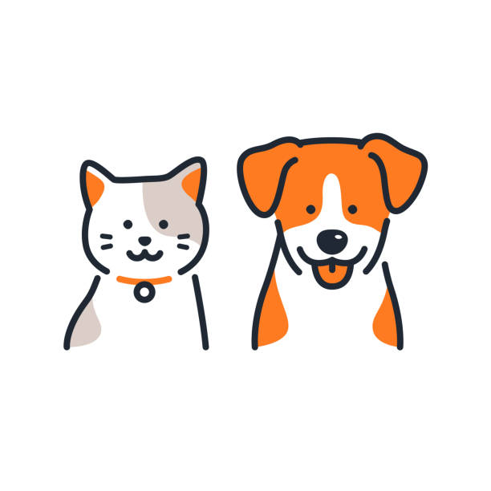

Bem-vindo à Patas Amigas!
Nossa missão é proteger animais abandonados, oferecer cuidados e encontrar famílias amorosas para eles.

Sobre Nós
Fundada em 2010, a ONG Patas Amigas tem se dedicado a resgatar e cuidar de animais abandonados em todo o país. Nosso trabalho é baseado em valores de compaixão, respeito e responsabilidade.
Adoção
Oferecemos um processo de adoção transparente e responsável, garantindo o bem-estar dos animais e a compatibilidade com as famílias interessadas.
Quero adotar